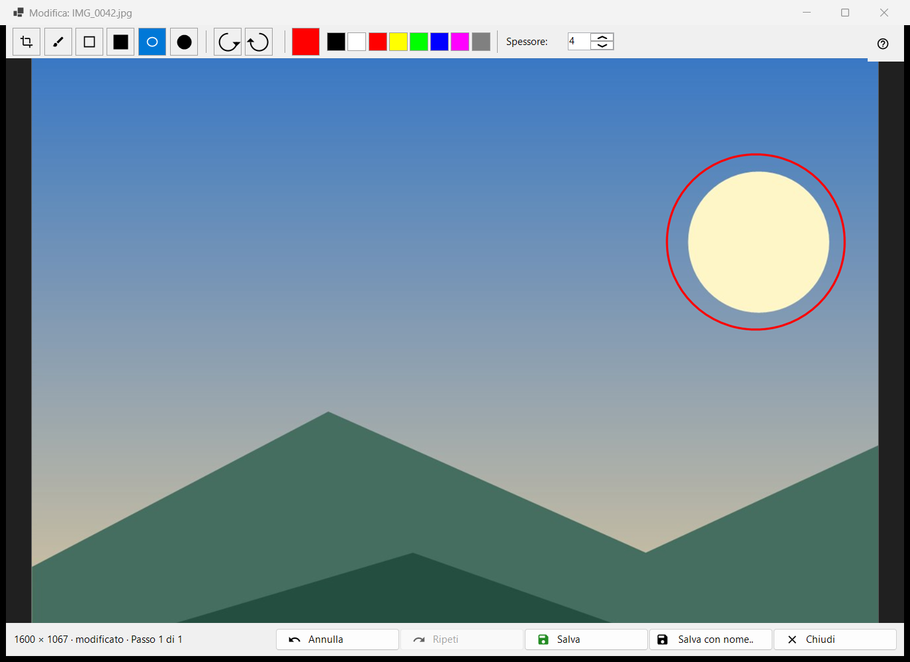
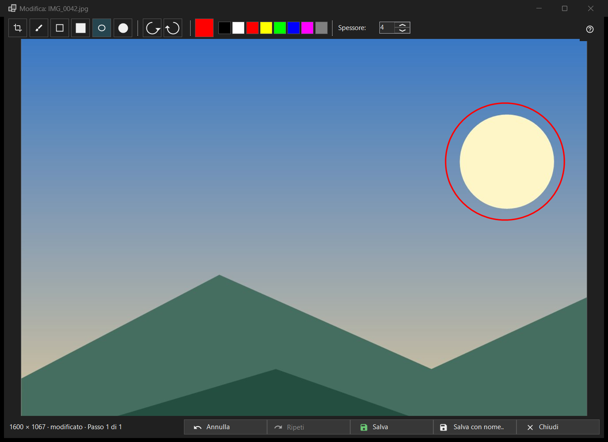

Modifica immagine
Scopo
Un piccolo editor per una singola immagine fissa: disegnare forme, ritagliare, ruotare e specchiare, poi salvare sopra l'originale o come nuovo file. Si apre, con il nome del file dell'immagine nel titolo, dal pulsante Modifica della barra degli strumenti o dalla prima voce del menu dell'immagine, e solo per un'immagine fissa (non per un'animazione). L'editor rilegge il file e lavora su una propria copia.


In questo ordine
- Premi Modifica nel visualizzatore.
- Scegli uno strumento, un colore e uno spessore.
- Disegna sull'immagine, oppure ritagliala, ruotala o specchiala; Annulla torna indietro di un passo.
- Premi Salva per scrivere sopra l'originale, oppure Salva con nome.. per un nuovo file.
- Chiudi la finestra; se ci sono modifiche non salvate, rispondi alla domanda.
Gli elementi
Strumenti
Nella striscia: Ritaglio, Pennello, Rettangolo, Rettangolo pieno, Ovale e Ovale pieno. I tasti sono C, B, R e O (quelli pieni non ne hanno). Tieni premuto Shift mentre disegni un rettangolo o un ovale per ottenere un quadrato o un cerchio. Passando il mouse su uno strumento compaiono il suo nome e il suo tasto.
Colore e spessore
Il pulsante del colore apre la finestra dei colori, e accanto ci sono otto campioni rapidi (nero, bianco, rosso, giallo, verde lime, blu, magenta, grigio). Lo spessore va da 1 a 64 pixel dell'immagine (predefinito 4); i tasti [ e ] lo cambiano di uno. Colore e spessore sono condivisi da tutti gli strumenti.
Ritaglio
Con lo strumento Ritaglio, trascina un riquadro sull'immagine. Il pulsante Applica ritaglio compare solo finché esiste un riquadro. Enter fa lo stesso; Esc rimuove il riquadro senza ritagliare. L'immagine viene tagliata solo quando applichi il ritaglio.
Ruota e specchia
Ruota a sinistra (Ctrl+[) e Ruota a destra (Ctrl+]) ruotano i pixel. I tasti H e V specchiano l'immagine in orizzontale e in verticale. Questo cambia l'immagine stessa, a differenza di R nel visualizzatore, che ruota solo la visualizzazione.
Annulla e Ripeti
Annulla (Ctrl+Z) e Ripeti (Ctrl+Y o Ctrl+Shift+Z) percorrono la cronologia di al massimo 20 passi entro un limite di memoria. La riga di stato mostra la dimensione e, dopo una modifica, modificato con Passo N di M; quando il limite scarta i passi più vecchi dice I passi più vecchi sono stati scartati: limite di memoria.
Salva
Salva (Ctrl+S) scrive sopra l'originale ed è attivo solo dopo una modifica; prima, il suo suggerimento dice Niente da salvare: l'immagine non è stata modificata. Per un JPEG ti viene chiesto una volta per sessione: Il JPEG verrà ricompresso - l'operazione è irreversibile. La data di scatto e gli altri dati EXIF vengono mantenuti. Il file viene scritto con un nome temporaneo e scambiato; se il salvataggio fallisce, la finestra resta aperta con il motivo.
Salva con nome..
Apre una finestra di file con il nome seguito da (modificata). I formati sono PNG, JPEG, BMP, TIFF e WebP; un'immagine in qualsiasi altro formato viene proposta come PNG. La cartella temporanea di un archivio viene rifiutata. Dopo aver salvato sopra l'originale il visualizzatore lo ricarica; un nuovo file nella stessa cartella viene aperto; uno altrove viene indicato nella riga di stato.
Quando Salva è disattivato
La riga di stato dice Impossibile sovrascrivere l'originale, con il motivo: questo formato non viene scritto, il file è di sola lettura, mancano i permessi di scrittura, un altro programma sta usando il file, il file ha più pagine o fotogrammi (viene modificato solo il primo), si trova dentro un archivio oppure non esiste. Salva con nome.. resta disponibile.
Chiusura
Chiudi o Esc chiude la finestra; Esc prima annulla un tratto in corso, poi rimuove il riquadro di ritaglio. Con modifiche non salvate la domanda dice: Le modifiche non sono salvate - Chiudere l'editor e perdere le modifiche non salvate? Salva salva prima, Non salvare scarta, Annulla (la risposta predefinita, anche Esc) resta nell'editor. Questa domanda viene posta anche quando le conferme sono disattivate.